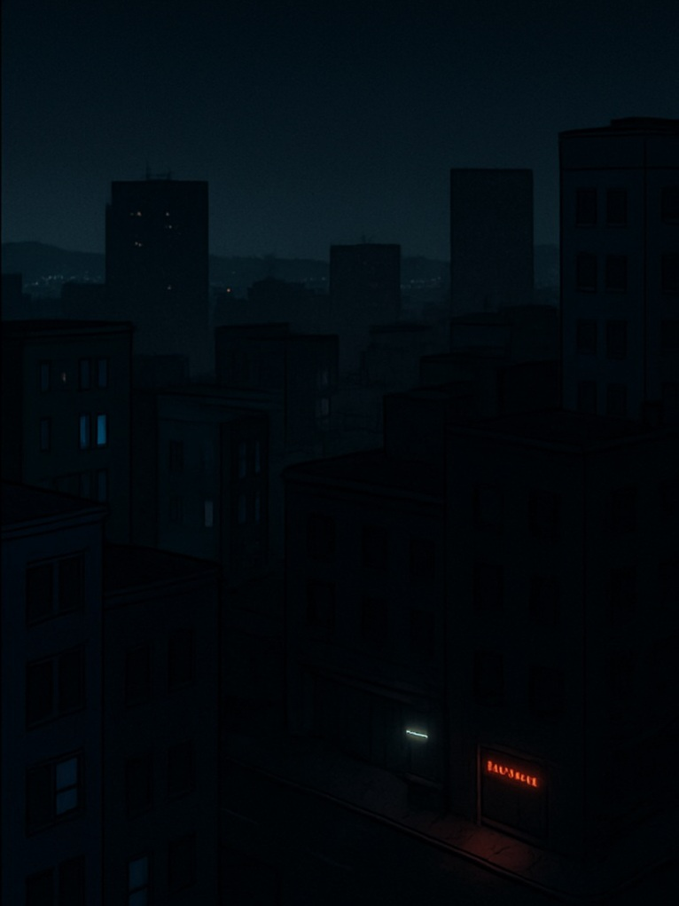

いつもの夜。あたりまえの光。

もし突然すべてが消えたら…？
それは、ある日突然やってくるかもしれません。
台風、地震、猛暑の電力ピーク——
一つの変化で、都市全体が闇に包まれることがあります。
信号が止まり、冷蔵庫が止まり、エレベーターが閉じ込め、病院も通信も機能を失う。 それが「ブラックアウト」。
びわ湖電池があれば
たった1cmの水が、数日間の安心を生みます。
自然の高低差を利用した電池は、止まっても爆発せず、動けば即エネルギーを届けます。
災害に強く、長持ちし、誰のそばにもある——
それが「びわ湖電池」の強みです。